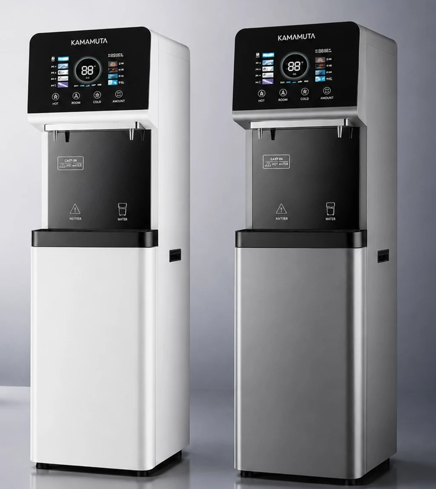
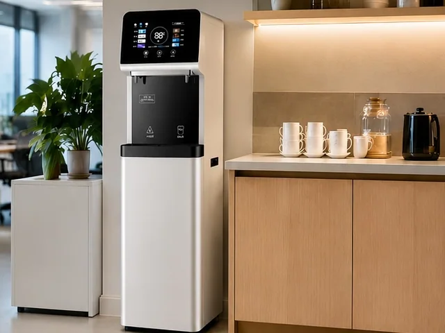
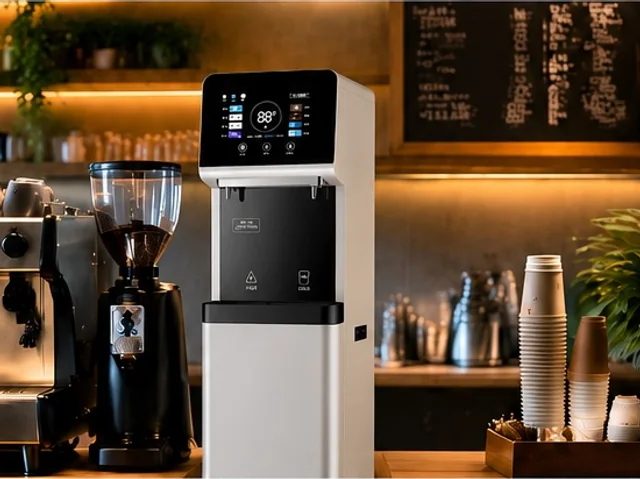
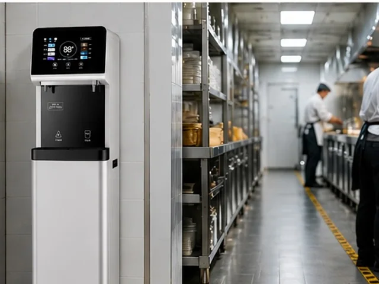
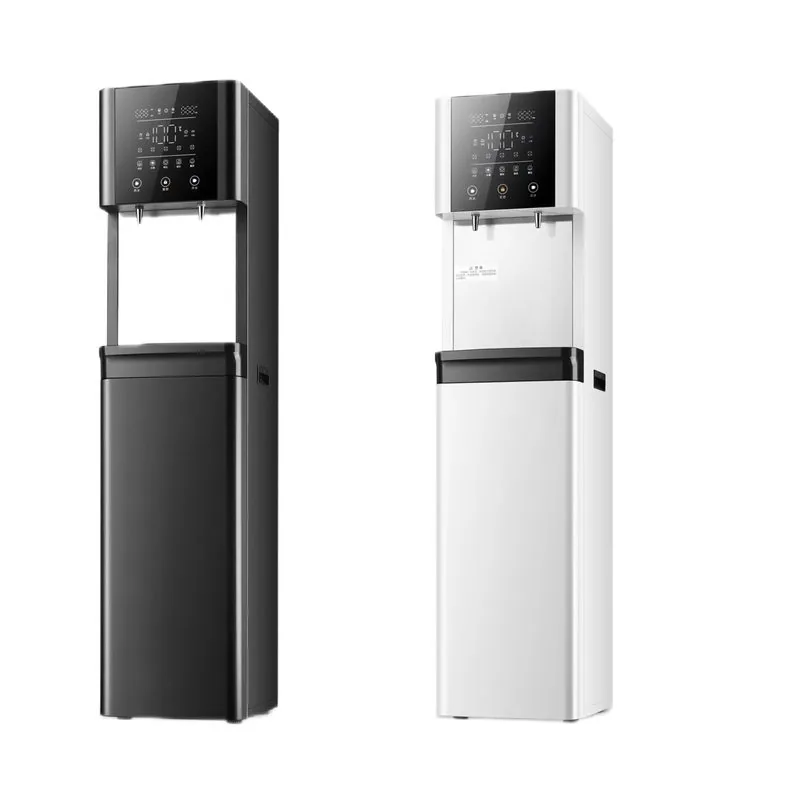

موزع المياه التجاري E600-S بنظام RO
موزع المياه التجاري E600-S بنظام RO — Available With or Without a Payment System — Cabinet Material: Galvanized steel and tempered glass.
عرض المنتج
E600-S-Min موزع مياه تجاري بنظام RO بتصميم مدمج للمكاتب والمقاهي ومطابخ الفنادق ونقاط مياه الشرب التي تُدار ضمن المنشآت. يتوفر الهيكل باللون الأبيض أو الرمادي، ويمكن تهيئته بخيار تنقية RO بسعة 100G أو 400G، وخزان ماء ساخن بسعة 5 L أو 10 L، مع عرض TDS وتذكير بعمر الفلتر.
ملاحظة بشأن العلامة التجارية: تظهر علامة KAMAMUTA على الوحدات النموذجية كعلامة عرض. ويمكن لمشروعات OEM والعلامات التجارية الخاصة تحديد الشارة ورسومات لوحة التحكم والأدلة وتصميم الكرتون.
يمكن تخطيط هذا التصميم القائم لتوفير مياه الشرب للموظفين، أو إعداد المشروبات، أو خدمة مياه الشرب في مناطق التشغيل الخلفية.



| الطراز | E600-S-Min |
|---|---|
| نوع المنتج | موزع مياه RO تجاري مدمج قائم على الأرض |
| الأبعاد الصافية | 400 x 400 x 1450 mm |
| أبعاد التغليف | 465 x 465 x 1495 mm |
| سعة RO | خيار 100G أو 400G، ويُحدد حسب المشروع |
| تدفق المياه المنقاة | 0.26 L/min مع إعداد 100G أو 1.05 L/min مع إعداد 400G |
| إنتاج الماء الساخن | 20 L/h |
| خيارات خزان الماء الساخن | 5 L (1000 W) أو 10 L (1500 W)، وفق ورقة التهيئة المقدمة |
| التهيئة الكهربائية | 220 V، 50 Hz؛ ويجب تأكيد قدرة التسخين مع الخزان المختار قبل إعداد عرض السعر |
| المنافذ القياسية | منفذ واحد للماء الساخن ومنفذ واحد للماء بدرجة حرارة الغرفة |
| خيارات التبريد | خيار تبريد إلكتروني 0.6 L أو تبريد بالضاغط 8 L؛ ويجب تأكيد القدرة مع حزمة التبريد المختارة |
| خزان الماء بدرجة حرارة الغرفة | خزان من الفولاذ المقاوم للصدأ SUS 304 مصنوع بالسحب العميق |
| تصنيع الهيكل | فولاذ مجلفن بسماكة 0.8 mm مع أجزاء من الفولاذ المقاوم للصدأ، ومعالجة مضادة للصدأ وطلاء مسحوقي يصفه المصدر بأنه ثلاثي الحماية |
| خزان ضغط اختياري | خزان مدمج بسعة 3.2 غالون؛ ويمكن للوحدة الرئيسية الواحدة تغذية موزع تابع واحد أو اثنين بعد إجراء التقييم الهندسي للموقع |
| خيارات التحكم | عداد تنازلي لمدة 365 يومًا أو لوحة تحكم عامة تدعم إنترنت الأشياء (IoT) |
| ألوان الهيكل | أبيض أو رمادي |
| الوزن | 35 kg صافيًا؛ 38 kg مع التغليف |
لإعداد عرض سعر دقيق، يرجى تزويدنا بعدد المستخدمين المتوقع، وتحليل مياه الدخول، ونمط الاستخدام وقت الذروة، ودرجات الحرارة المطلوبة، والمعيار الكهربائي، والمساحة الأرضية المتاحة، والكمية المطلوبة ووجهة الشحن. تساعد هذه البيانات على تحديد إنتاج RO وترتيب التخزين وحزمة التبريد وقطع الخدمة.
يستخدم E600-S-Min هيكلًا قائمًا ضيقًا للمواقع التي تحتاج إلى جهاز تنقية مدمج من دون جهاز منفصل يوضع على سطح الطاولة. ويساعد خيارا التشطيب الموزعين على تنسيق الوحدة مع مطابخ المكاتب وواجهات المقاهي ومناطق الخدمة في الفنادق.
يلائم خيار 100G الطلب المتوسط عند نقطة الاستخدام، بينما يوفر خيار 400G تدفقًا أعلى للمياه المنقاة. وإذا احتاج المشروع إلى منافذ إضافية، فيجب التحقق من خزان الضغط الاختياري بسعة 3.2 غالون ومن توزيع الموزعات التابعة، مع مراعاة طول الأنابيب والضغط والاستخدام المتزامن.
يستخدم E600-S-Min هيكلًا مدمجًا وتصميمًا مختلفًا للوحة التحكم، مع منصة التنقية القابلة للتهيئة 100G/400G وخزان الماء الساخن والمراقبة التي يؤكد المصدر توفرها ضمن مجموعة E600-S.
يعرض تقديم المنتج المتاح نسختين من الهيكل باللونين الأبيض والرمادي. ويُؤكد اللون النهائي والشارة ورسومات اللوحة قبل الإنتاج.
نعم. ينبغي أن يراعي اختيار السعة جودة مياه الدخول والاستهلاك اليومي والطلب وقت الذروة وترتيب التخزين أو التوزيع المخطط له.
لا. التبريد وخزان الضغط المدمج بسعة 3.2 غالون خياران إضافيان، ويجب إدراجهما في طلب عرض السعر.
Provide quantity, destination, user count, inlet-water analysis, سعة RO, hot-tank size, cooling requirement, voltage, cabinet color, branding files, control option and packaging requirements.
موزع المياه التجاري E600-S بنظام RO — Available With or Without a Payment System — Cabinet Material: Galvanized steel and tempered glass.
عرض المنتج
موزع مياه RO تجاري من الفولاذ المقاوم للصدأ E900-K27 — Size: 800 x 480 x 1520 mm; Hot tank: 27L.
عرض المنتج
Vertical موزع مياه MT-E600 — الترشيح: خيارات وحدات PP أو CTO أو GAC أو UF أو RO.
عرض المنتجأرسل معلومات موقع التركيب وعدد المستخدمين المتوقع وظروف مياه الدخول وإنتاج RO المختار ومتطلبات خزان الماء الساخن والتبريد ولون الهيكل وملفات العلامة التجارية والكمية ووجهة الشحن.